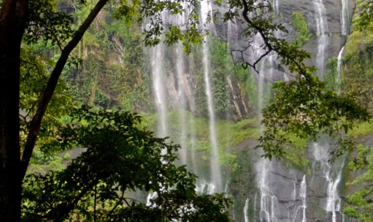

01.Idukki Arch Dam

The Idukki dam is constructed across the Periyar River, in a valley between the Kuravan and Kurathi hills in Kerala. The awe-inspiring, majestic dam, which stands at 167.68 meters (550 ft), is one of the highest arch dams in Asia. The dam, which is one of the Idukki tourist places, constructed by the Kerala government in 1975 and supports 780 MW hydroelectric power station that draws electricity from this dam.
The sheer magnitude of the structure along with the mountains, verdant vegetation, and 60 sq. km placid lake, which is created by the 3 dams, Idukki dam, Cheruthoni and Kulamavu, captivate the visitors.
Distance: 33 km from Idukki Dist.
Timings: Public Holidays, Saturdays and Sundays.
Entry Fees: Rs 25 for adults and Rs 5 for children. The tariff for a 15-minute boat ride for 5 persons is Rs. 600.
02.Keezharkuthu Falls

The cascading waters from a height of 1500 meters amidst the hills enveloped in lush greenery, adorns the skies with rainbows that takes the visitors’ breath away. A favorable hunting ground for photographers, the Keezharkuthu falls also referred to as rainbow falls immerse the visitors in an inexplicable experience.
The contiguous forests are believed to be endowed with medicinal plants and herbs, which are used by tribal inhabitants from centuries. It is also home for rich fauna.The rocky terrain of the Keezharkuthu, one of the Idukki tourist places, is renowned for its exploration activities such as rock climbing, mountaineering, camping, and trekking.
The place is also close to a number of tourist hotspots like Thommankuthu waterfalls, Kalvari Mount, and Ramakkalmedu Peak.
Distance: 30 km from Idukki.
Timings:All Day
Best time to visit: The best time to visit the Keezharkuthu Waterfalls is during monsoons though one can visit throughout the year.
Entry fee: None.
03.Hill View Park

Hill View Park, one of the Idukki tourist places, located at a distance of 2 km from Idukki Bus stand, is a magnificent and well-managed park. The park, stretching over 8 acres enthralls the visitors with hundreds of varieties of crotons, flowers, medicinal plants, and other woods.
The Hill View Park houses a natural water body, where visitors can enjoy boat rides. The view from the watchtower of both the dams, Idukki and Cheruthoni, the surrounding hills on all four sides and the lush greenery takes the breath away.
The Park remains open throughout the year and can be accessed through gentle slopes, though it is stationed at 350 ft above the level of Dam water. The herbal garden and children’s play area add appeal to the Hill View Park.
Distance: 2 km from Idukki.
Entry Fees: Rs. 10 for adults and Rs. 5 for Children.